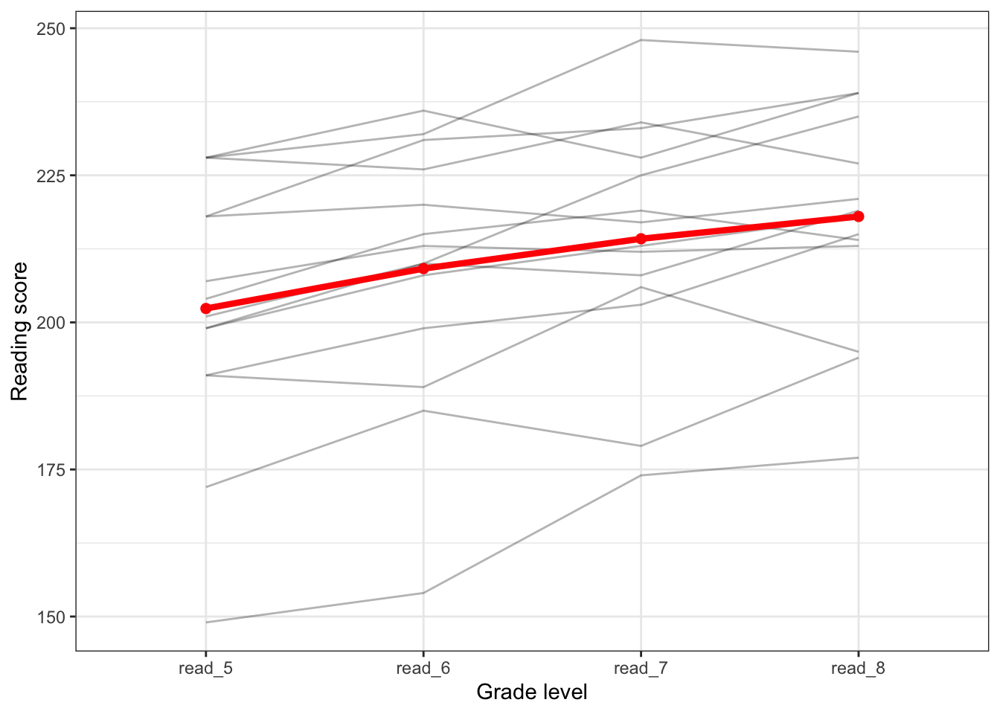
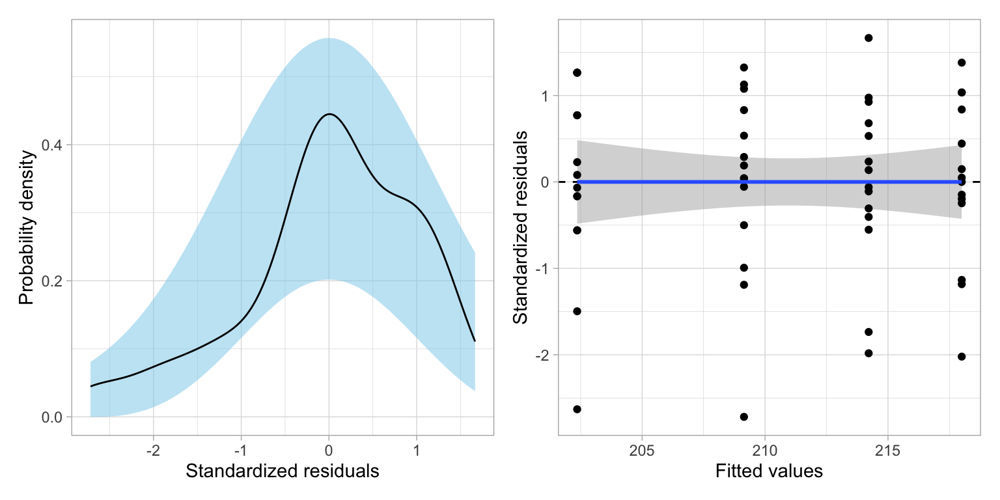

# Load libraries
library(broom)
library(corrr)
library(ez)
library(tidyverse)Classical Methods in Longitudinal (Repeated Measures) Analysis
In this essay we will use data from \(n=22\) students to explore the longitudinal question of whether there are mean differences in reading scores over time. To do this we will carry out a repeated measures analysis of variance (RM-ANOVA) on a set of data provided by Long (2011). To begin the analysis, we will load four packages that we will use in this analysis.
We will import the data from the file minneapolis.csv using the read_csv() function from the {tidyverse} package.
# Import data
mpls = read_csv("https://raw.githubusercontent.com/zief0002/musings/main/data/minneapolis.csv")
# View data
mpls# A tibble: 22 × 6
student read_5 read_6 read_7 read_8 minority
<dbl> <dbl> <dbl> <dbl> <dbl> <dbl>
1 1 172 185 179 194 1
2 2 200 210 209 NA 1
3 3 191 199 203 215 1
4 4 200 195 194 NA 1
5 5 207 213 212 213 1
6 6 191 189 206 195 1
7 7 199 208 213 218 1
8 8 191 194 194 NA 1
9 9 149 154 174 177 1
10 10 200 212 213 NA 1
# ℹ 12 more rowsWide vs. Long Data Structures
There are two primary data structures for working with repeated measures data, wide and long formatted data. Currently, the mpls data is structured as wide data. In the wide structure, there are multiple columns representing the repeated measures that are collected for each case. In the mpls data, the data collected longitudinally, the reading scores (i.e., the repeated measures), are recorded in multiple columns, one per grade level, for each student.
| student | read_5 | read_6 | read_7 | read_8 | minority |
|---|---|---|---|---|---|
| 1 | 172 | 185 | 179 | 194 | 1 |
| 2 | 200 | 210 | 209 | NA | 1 |
| 3 | 191 | 199 | 203 | 215 | 1 |
| 4 | 200 | 195 | 194 | NA | 1 |
| 5 | 207 | 213 | 212 | 213 | 1 |
| 6 | 191 | 189 | 206 | 195 | 1 |
| 7 | 199 | 208 | 213 | 218 | 1 |
| 8 | 191 | 194 | 194 | NA | 1 |
| 9 | 149 | 154 | 174 | 177 | 1 |
| 10 | 200 | 212 | 213 | NA | 1 |
| 11 | 218 | 231 | 233 | 239 | 0 |
| 12 | 228 | 232 | 248 | 246 | 0 |
| 13 | 228 | 236 | 228 | 239 | 0 |
| 14 | 199 | 210 | 225 | 235 | 1 |
| 15 | 218 | 223 | 236 | NA | 0 |
| 16 | 228 | 226 | 234 | 227 | 0 |
| 17 | 201 | 210 | 208 | 219 | 0 |
| 18 | 218 | 220 | 217 | 221 | 0 |
| 19 | 215 | 216 | 221 | NA | 0 |
| 20 | 204 | 215 | 219 | 214 | 1 |
| 21 | 237 | 241 | 243 | NA | 0 |
| 22 | 219 | 233 | 236 | NA | 1 |
Long structured (or formatted) data each row is a different case-by-repeated-measure combination. In our example, each row would indicate the data for a particular student at a particular grade level. Each case (i.e., student) would be associated with multiple rows in the long structure. The entire long structured data would have 88 rows (22 students, each with 4 grade levels).
| student | minority | grade | reading_score |
|---|---|---|---|
| 1 | 1 | read_5 | 172 |
| 1 | 1 | read_6 | 185 |
| 1 | 1 | read_7 | 179 |
| 1 | 1 | read_8 | 194 |
| 2 | 1 | read_5 | 200 |
| 2 | 1 | read_6 | 210 |
| 2 | 1 | read_7 | 209 |
| 2 | 1 | read_8 | NA |
| 3 | 1 | read_5 | 191 |
| 3 | 1 | read_6 | 199 |
| 3 | 1 | read_7 | 203 |
| 3 | 1 | read_8 | 215 |
| 4 | 1 | read_5 | 200 |
| 4 | 1 | read_6 | 195 |
| 4 | 1 | read_7 | 194 |
| 4 | 1 | read_8 | NA |
Both the wide and long structures are useful at different times during the data-analytic cycle. For example, most repeated measures data are entered into a spreadsheet and stored in the wide-format. This is a good way to organize these data initially because it minimizes the redundancy (only 1 row per case) while entering the data into the spreadsheet, thereby minimizing initial coding errors. The wide format can also be useful for descriptive analysis (e.g., computing means, SDs, and correlations) and for carrying out listwise deletion of cases. The long structure is necessary for plotting the data when using {ggplot}. It is also the appropriate structure for computing summaries with {dplyr} functionality and for carrying out all modeling of the data, including the RM-ANOVA.
Missing Data: Listwise Deletion
Many repeated measures studies will have missing data since it is often difficult to obtain data for every subject at every timepoint. The missingness shown in the mpls data, which is consistent with dropout especially at later timepoints, is common for educational studies.
| student | read_5 | read_6 | read_7 | read_8 | minority |
|---|---|---|---|---|---|
| 1 | 172 | 185 | 179 | 194 | 1 |
| 2 | 200 | 210 | 209 | NA | 1 |
| 3 | 191 | 199 | 203 | 215 | 1 |
| 4 | 200 | 195 | 194 | NA | 1 |
| 5 | 207 | 213 | 212 | 213 | 1 |
| 6 | 191 | 189 | 206 | 195 | 1 |
| 7 | 199 | 208 | 213 | 218 | 1 |
| 8 | 191 | 194 | 194 | NA | 1 |
| 9 | 149 | 154 | 174 | 177 | 1 |
| 10 | 200 | 212 | 213 | NA | 1 |
| 11 | 218 | 231 | 233 | 239 | 0 |
| 12 | 228 | 232 | 248 | 246 | 0 |
| 13 | 228 | 236 | 228 | 239 | 0 |
| 14 | 199 | 210 | 225 | 235 | 1 |
| 15 | 218 | 223 | 236 | NA | 0 |
| 16 | 228 | 226 | 234 | 227 | 0 |
| 17 | 201 | 210 | 208 | 219 | 0 |
| 18 | 218 | 220 | 217 | 221 | 0 |
| 19 | 215 | 216 | 221 | NA | 0 |
| 20 | 204 | 215 | 219 | 214 | 1 |
| 21 | 237 | 241 | 243 | NA | 0 |
| 22 | 219 | 233 | 236 | NA | 1 |
Missing data is a problem for most data analysis. There are several ways to deal with missing data, the two most common being:
- Remove missing data (deletion)
- Replace missing values with an actual value (imputation)
Unfortunately, no matter how you treat missing data, there may be a problems for your inferences. If you delete data, is your sample still an unbiased representation of the population? How do you pick values to replace missing values? And, once you do, are the estimates you get still valid? For a fuller treatment of missing data, see Little & Rubin (1940).
The RM-ANOVA methodology is quite prickly about missing data, namely it cannot use any data from a subject that is missing data at even a single timepoint. This means that we need to delete the eight students with missing data. To do this we will use the drop_na() function from the {tidyverse} package. This function will drop any row with missing data.
# Drop rows with missing data
mpls_complete_cases = mpls |>
drop_na()
# View new data
mpls_complete_cases# A tibble: 14 × 6
student read_5 read_6 read_7 read_8 minority
<dbl> <dbl> <dbl> <dbl> <dbl> <dbl>
1 1 172 185 179 194 1
2 3 191 199 203 215 1
3 5 207 213 212 213 1
4 6 191 189 206 195 1
5 7 199 208 213 218 1
6 9 149 154 174 177 1
7 11 218 231 233 239 0
8 12 228 232 248 246 0
9 13 228 236 228 239 0
10 14 199 210 225 235 1
11 16 228 226 234 227 0
12 17 201 210 208 219 0
13 18 218 220 217 221 0
14 20 204 215 219 214 1The data now contains only the complete cases, the students with no missing data. This treatment of missing data is referred to as listwise or casewise deletion since we deleted whole rows or cases from the data. Note that in our sample, using the complete cases drops our sample size from \(N=22\) to \(N=14\) students. We have omitted nearly 40% of the initial cases! In practice, listwise deletion can result in omitting almost everyone, especially in studies with many timepoints as dropout tends to be high.
Re-Structuring the Data to the Long Format
Ultimately, we will also need the data in the long format to carry out the RM-ANOVA. Structuring from wide to long structured data (or vice versa) is referred to as pivoting the data. As an example of pivoting, consider the first student’s data in the wide data:
| student | read_5 | read_6 | read_7 | read_8 | minority |
|---|---|---|---|---|---|
| 1 | 172 | 185 | 179 | 194 | 1 |
When we pivot this to the long format, we will combine the four reading scores into a single column called reading_score in the long data. We also need to include a column that identifies the grade level (grade) for each of the four reading scores (this is pulled from the original varaible names in the wide data). Finally, the student number and minority data from the wide data are appended to each row of the student’s long data.
| student | minority | grade | reading_score |
|---|---|---|---|
| 1 | 1 | read_5 | 172 |
| 1 | 1 | read_6 | 185 |
| 1 | 1 | read_7 | 179 |
| 1 | 1 | read_8 | 194 |
To re-structure the data from the wide to the long format, we will use the function pivot_longer() from the {tidyverse} package. (The pivot_wider() function re-structures data from the long to the wide format.) We specify the columns that include the data we want to combine into a single column in the long data (cols=), and the new variable names we want in the long data associated with the original variable names (names_to=), and the data values (values_to=). In our example:
# Re-structure data to long format
mpls_long = mpls_complete_cases |>
pivot_longer(
cols = read_5:read_8,
names_to = "grade",
values_to = "reading_score"
)
# View long data
mpls_long# A tibble: 56 × 4
student minority grade reading_score
<dbl> <dbl> <chr> <dbl>
1 1 1 read_5 172
2 1 1 read_6 185
3 1 1 read_7 179
4 1 1 read_8 194
5 3 1 read_5 191
6 3 1 read_6 199
7 3 1 read_7 203
8 3 1 read_8 215
9 5 1 read_5 207
10 5 1 read_6 213
# ℹ 46 more rowsEvaluating the Sample Change Over Time
Is there an effect of time (i.e., a longitudinal effect) on reading scores? To begin to evaluate this, we can plot and numerically summarize the sample data. To graphically evaluate this question, we can plot the reading scores over time using the long formatted data. In this plot, we will (1) group the data by student to examine the individual change profiles, and (2) plot the average reading score over grade level to examine the mean profile.
ggplot(data = mpls_long, aes(x = grade, y = reading_score)) +
# Plot individual profiles
geom_line(aes(group = student), alpha = 0.3) +
# Plot mean profile
stat_summary(fun.y = mean, group = 1, geom = "line", color = "red", lwd = 1.5) +
stat_summary(fun.y = mean, group = 1, geom = "point", color = "red", size = 2) +
theme_bw() +
xlab("Grade level") +
ylab("Reading score")
The plot indicates that the average reading score seems to differ by grade level in the sample. The average reading score seems to be higher at higher grade levels. We can confirm this by computing the mean reading score at each grade level.
mpls_long |>
group_by(grade) |>
summarize(
M = mean(reading_score),
SD = sd(reading_score)
)# A tibble: 4 × 3
grade M SD
<chr> <dbl> <dbl>
1 read_5 202. 22.4
2 read_6 209. 22.0
3 read_7 214. 20.2
4 read_8 218 19.4Effect of Grade-Level
If we didn’t think about the analysis, to examine whether there was a longitudinal effect of grade-level on reading scores, we might fit a model that includes the main effect of grade-level using our long formatted data. To fit the model as an ANOVA, all of the predictors are required to be factors. Since grade is a character variable, it will be treated as a factor in the model.
# Fit model
lm.1 = lm(reading_score ~ 1 + grade, data = mpls_long)
# Partition variation
anova(lm.1)Analysis of Variance Table
Response: reading_score
Df Sum Sq Mean Sq F value Pr(>F)
grade 3 1924.4 641.48 1.4474 0.2397
Residuals 52 23045.3 443.18 There does not appear to be a main effect of time, \(F(3, 52) = 1.45\), \(p = 0.240\). This suggests that the empirical data are consistent with the hypothesis of no differences in the average reading scores across grades.
Assumption Evaluation
Before we put too much stock in these results, however, we will evaluate the model’s assumptions.

The residual plots look pretty good—it seems that the assumptions of linearity, normality, and homoskedasticity are all satisfied. But, the assumption of independence is likely violated. Based on our understanding of how education works, we believe that a student’s reading scores from year-to-year are correlated. We can examine this by computing the correlation matrix for the repeated measures using the wide data.
mpls_complete_cases |>
select(read_5:read_8) |>
correlate() |>
shave() |>
fashion(decimals = 3) term read_5 read_6 read_7 read_8
1 read_5
2 read_6 .976
3 read_7 .928 .913
4 read_8 .883 .929 .923 This matrix suggests that students reading scores from grade-to-grade are highly correlated.
Grade-by-Student Interaction Model
Aside from an effect of time, the plot in Figure 1 also clearly displays an effect of student; some students have higher reading scores on average than others. Moreover, the plot suggests that there is an interaction effect between grade-level and individual student on reading score. We can see this because the individual growth profiles are not parallel. This implies that the effect of grade-level differs by student.
This implies that we need to fit a model (using the long formatted data) that predicts variation in reading scores and includes:
- A main effect of grade-level
- A main effect of student
- An interaction effect between grade-level and student
To fit this as an ANOVA, all of the predictors are required to be factors. Since grade is a character variable, it will be treated as a factor in the model. The student variable, however, is currently numeric and will need to be coerced into a factor everytime it appears in the model. To fit this model:
# Fit model
lm.2 = lm(reading_score ~ 1 + grade + factor(student) + grade:factor(student), data = mpls_long)
# Partition variation
anova(lm.2)Analysis of Variance Table
Response: reading_score
Df Sum Sq Mean Sq F value Pr(>F)
grade 3 1924.4 641.48 NaN NaN
factor(student) 13 21696.2 1668.94 NaN NaN
grade:factor(student) 39 1349.1 34.59 NaN NaN
Residuals 0 0.0 NaN While R fits the model, when we ask for the ANOVA table, we are given a warning message and the table does not include any output in the “Residual” line. That is because there is only one measurement per cell in the table that divides up subjects (rows) and seasons (columns). The error or residual term measures the within-cell variation, but with only one measurement per cell, there is no within-cell variation.
Because there is no error estimate of the mean square, there is also no F-values produced, nor any inferential results. In a repeated measures design, the interaction between subject and time takes the place of the error variance in the calculations of F. We need to compute the F-values and p-values to fill in the ANOVA table:
# F-values
641.48 / 34.59 #Grade[1] 18.545241668.94 / 34.59 #Student[1] 48.2492# p-values
pf(q = 18.54524, df1 = 3, df2 = 39, lower.tail = FALSE) #Grade[1] 1.231027e-07pf(q = 48.2492, df1 = 3, df2 = 39, lower.tail = FALSE) #Student[1] 3.38956e-13The ANOVA table for this model fitted to our reading data looks like this:
| Source | df | SS | MS | F | p |
|---|---|---|---|---|---|
| Grade | 3 | 1924.4 | 641.48 | 18.54 | <.001 |
| Students | 13 | 21696.2 | 1668.94 | 48.25 | <.001 |
| Students x Grade | 39 | 1349.1 | 34.59 |
The hypotheses associated with the main-effect being tested by the F-tests are, respectively,
- Grade: \(H_0\): The mean reading score (collapsing across students) is the same for every grade level.
- Student: \(H_0\): The mean reading score (collapsing across grade-level) is the same for every student.
The second of these (the student effect) we reject. The significant p-value (\(p<.001\)) indicates that the mean reading score (collapsing across grade levels) is not the same for every student. While this might be interesting in some research problems, it is not of interest here.
The more important hypothesis is whether the mean reading score (collapsing across students) is the same for every grade level. We also reject this hypothesis (\(p<.001\)). There are likely grade-level differences in the mean reading scores. This is evidence that supports the scientific hypothesis of reading scores changing over time.
If you were interested in which grade levels differed, you would need to go in and test each pairwise contrast (Grade 5 vs. Grade 6, etc.) and then adjust the p-values to account for the number of tests you carried out.
Assumptions for Using RM-ANOVA
One of the major assumptions for valid output from the RM-ANOVA is sphericity. This assumption says that the variance of the difference scores between measurements at any two time points are the same in the population. To examine this, we would need to compute the difference scores between every two timepoints and evaluate the variances of those differences. With four time points (grade levels) there are six different difference scores to compute.
# Compute difference scores
diffs = mpls |>
mutate(
d1 = read_6 - read_5,
d2 = read_7 - read_6,
d3 = read_7 - read_5,
d4 = read_8 - read_7,
d5 = read_8 - read_6,
d6 = read_8 - read_5
) |>
dplyr::select(d1, d2, d3, d4, d5, d6)
# View differences
diffs# A tibble: 22 × 6
d1 d2 d3 d4 d5 d6
<dbl> <dbl> <dbl> <dbl> <dbl> <dbl>
1 13 -6 7 15 9 22
2 10 -1 9 NA NA NA
3 8 4 12 12 16 24
4 -5 -1 -6 NA NA NA
5 6 -1 5 1 0 6
6 -2 17 15 -11 6 4
7 9 5 14 5 10 19
8 3 0 3 NA NA NA
9 5 20 25 3 23 28
10 12 1 13 NA NA NA
# ℹ 12 more rowsThe variance for each of the six sets of difference scores are displayed below:
diffs |>
summarize(
across(.cols = d1:d6, .fns = var, na.rm = TRUE)
)# A tibble: 1 × 6
d1 d2 d3 d4 d5 d6
<dbl> <dbl> <dbl> <dbl> <dbl> <dbl>
1 28.4 58.4 67.1 61.3 67.8 111.This analysis suggests that the sphericity assumption is not met. (Note: Some data analysts use a test, Mauchley’s Test, to examine the sphericity assumption. This test is known to yield signiicant results, saying that sphericity has been violated, when it shouldn’t. This is especially true when the distributions of difference scores are non-normal.
METHODOLOGICAL ADVICE
DO NOT USE MAUCHLEY’S TEST to examine the assumption of sphericity.
Because computing the difference scores can be a pain, especially with a lot of time points, data analysts often examine a related property called compound symmetry. Compound symmetry looks at the raw data rather the difference scores. In order for compound symmetry to be met, we must have:
- Homogeneity of variance of the raw data at each time point
- Equal correlations between time points
To check this we compute the sample variances at each time point and we also compute the correlations between time points.
# Compute variances (use long data)
mpls_long |>
group_by(grade) |>
summarize(Var = var(reading_score))# A tibble: 4 × 2
grade Var
<chr> <dbl>
1 read_5 503.
2 read_6 485.
3 read_7 409.
4 read_8 376.# Compute correlations (use wide data)
mpls |>
dplyr::select(read_5:read_8) |>
correlate() |>
shave() |>
fashion(decimals = 3) term read_5 read_6 read_7 read_8
1 read_5
2 read_6 .965
3 read_7 .914 .926
4 read_8 .883 .929 .923 There is evidence that the property of compound symmetry is not met: the sample variances are not the same, and the correlations between time points is not the same. This tells us the same story as examining the variances of the differences—the assumption of sphericity is likely violated!
Epsilon-Adjusted Tests
When the sphericity assumption has been violated, the F-distribution we use to compute the p-value does not have the dfs that we calculated in the ANOVA output. (If we use the original degrees of freedom we will have an increae in the Type I error rate!) One attempt to remedy this is to adjust the degrees of freedom, called an epsilon-adjustment. There are several ways to amake these adjustments. Two common methods employed in the social sciences are the (1) Greenhouse–Geisser epsilon-adjustment; and (2) Hyunh–Feldt epsilon-adjustment (named after the statisticians who derived them).
The way we measure sphericity is via a measure referred to as \(\epsilon\) (epsilon). An epsilon value of 1 indicate the data are perfectly spherical (the assumption is met), and values below that indicate the assumption is not met, with smaller values inidicating a grosser violation. (The minimum value of epsilon is 0.) The epsilon adjustments change the degrees of freedom used for evaluating the F-statistic by essentially multiplying the numerator and denominator degrees of freedom by their estimated epsilon value:
\[ \begin{split} \mathrm{Adj.}~\mathit{df}_1 = \epsilon(\mathit{df}_1) \\[2ex] \mathrm{Adj.}~\mathit{df}_2 = \epsilon(\mathit{df}_2) \\[2ex] \end{split} \]
The lowest value (worst case) epsilon can take on is referred to as the lower-bound and is caluclated as:
\[ \mathrm{Lower~Bound~for~} \epsilon = \frac{1}{\mathit{df}_1} \] where \(\mathit{df}_1\) is the numerator degree of freedom associated with the F-test. In our example this is:
\[ \begin{split} \mathrm{Lower~Bound~for~} \epsilon &= \frac{1}{3} \\[2ex] &= 0.333 \end{split} \] Using this estimate for epsilon, the F-value of 18.54 would be evaluated in an F-distribution having \(3\times0.333=1\) and \(39\times0.333=13\) degrees of freedom. This would result in the p-value of \(0.0008532426\); much larger than the p-value produced from our RM-ANOVA!
While Box (1954);Box:1954a originally proposed how to estimate epsilon, statisticians since then have proposed corrections for better measuring epsilon. Two of those corrections were published by Geisser & Greenhouse (1958) and Huynh & Feldt (1970). These are available in the output of the ezANOVA() function from the {ez} package. To fit the model, in addition to the long dataset, provide this function with the name of the dependent variable (dv=), the within-subjects factor (within=), and the within-subjects ID (wid=).
# Load package
library(ez)
# Fit RM-ANOVA model
rm_anova1 = ezANOVA(
data = mpls_long,
dv = reading_score,
within = grade,
wid = student
)
# View model output
print(rm_anova1)$ANOVA
Effect DFn DFd F p p<.05 ges
2 grade 3 39 18.54429 1.231739e-07 * 0.07707051
$`Mauchly's Test for Sphericity`
Effect W p p<.05
2 grade 0.2608632 0.007810945 *
$`Sphericity Corrections`
Effect GGe p[GG] p[GG]<.05 HFe p[HF] p[HF]<.05
2 grade 0.6774003 8.581994e-06 * 0.803893 1.616161e-06 *There are several parts of the output. The $ANOVA part of the output provides the same results as we computed earlier for the within-subjects factor of interest. Mauchly’s test for sphericity is also provided. (Remember this is misleading!) Then in the Sphericity Corrections part of the output we get the epsilon values and p-values based on both the Greenhouse–Geisser and Hyunh–Feldt adjustments.
As an example, the Greenhouse–Geisser corrected-\(\epsilon\) value was 0.677. Based on this epsilon estimate, the F-value of 18.54 would be evaluated in an F-distribution having \(3\times0.677=2.03\) and \(39\times0.677=26.42\) degrees of freedom. This results in the p-value of \(8.58 \times 10^{-06}\).
It is typical to present the p-values based on the unadjusted F-test, and the epsilon-adjusted tests for the time effect in an ANOVA table. (In these tables, the interaction effect is sometimes represented as the “Error” term.)
| Source | df | SS | MS | F | p | GG | HF |
|---|---|---|---|---|---|---|---|
| Grade | 3 | 1924.4 | 641.48 | 18.54 | <.001 | <.001 | <.001 |
| Students | 13 | 21696.2 | 1668.94 | 48.25 | <.001 | ||
| Students x Grade | 39 | 1349.1 | 34.59 |
Which set of results should be used? The methodological recommendation is to use the Greenhouse-Geisser correction. While some methodologists recommend using the Huynd-Feldt correction when the epsilon value is large, in practice, both corrections produce very similar corrections, especially when the estimated epsilon values are close to 1. Because of this you are pretty safe using the Greenhouse-Geisser correction.
MANOVA
Another common method for modeling repeated measures data is to use a multivariate ANOVA (MANOVA). Multivariate analyses, whether regression or ANOVA, model more than one outcome simultaneously. MANOVA does not have the sphericity assumption that is associated with the RM-ANOVA analysis, so it is often used as an alternative to RM-ANOVA.
In multivariate analyses, we can account for the variation in each outcome, and the correlation between the outcomes. The following pseudo-syntax shows the idea behind multivariate analysis:
manova( c(read_5, read_6, read_7, read_8) ~ 1 )Note that the “outcome” (the variables to the left of the tilde) now include multiple column names. This is the simplest model which is using time to predict a vector of outcomes. In a univariate analysis, time would be included as a predictor (on the right-hand side of the tilde), but in this model it is encompassed in the repeated measures. Similar to the RM-ANOVA, subject is also included in this model. But again, subject is included in the model not as a predictor, but by connecting all of their repeated measures in the outcome. (Note: This syntax won’t work in R, but is presented to illustrate the idea of multivariate analyses.)
To actually fit the MANOVA model, we need to bind the response columns (from the wide data) together into a single matrix. Then we will use the lm() function to fit the model.
# Bind all response columns into a matrix
outcome = cbind(mpls$read_5, mpls$read_6, mpls$read_7, mpls$read_8)
# View matrix
outcome [,1] [,2] [,3] [,4]
[1,] 172 185 179 194
[2,] 200 210 209 NA
[3,] 191 199 203 215
[4,] 200 195 194 NA
[5,] 207 213 212 213
[6,] 191 189 206 195
[7,] 199 208 213 218
[8,] 191 194 194 NA
[9,] 149 154 174 177
[10,] 200 212 213 NA
[11,] 218 231 233 239
[12,] 228 232 248 246
[13,] 228 236 228 239
[14,] 199 210 225 235
[15,] 218 223 236 NA
[16,] 228 226 234 227
[17,] 201 210 208 219
[18,] 218 220 217 221
[19,] 215 216 221 NA
[20,] 204 215 219 214
[21,] 237 241 243 NA
[22,] 219 233 236 NA#Fit model
mod.mlm = lm(outcome ~ 1)To get output that is traditionally associated with a MANOVA analysis, we will use the Anova() function from the {car} package. This function takes the name of the fitted model, an argument called idata= which is a data frame giving the factors defining the within-subjects model for multivariate repeated-measures data (i.e., the names of the repeated measures), and an argument called design= which provides a one-sided model formula using the data named in the idata= argument and specifying the within-subjects design. Finally, we also include type=3 to specify Type III sums of sqaures.
# Load library
library(car)
# Specify data frame defining within-subjects factors
ws_data = data.frame(
time = ordered(c("read_5", "read_6", "read_7", "read_8"))
)
# Specify Anova()
manova1 = Anova(
mod.mlm,
idata = ws_data,
idesign = ~time,
type = 3
)
# View results
summary(manova1)
Type III Repeated Measures MANOVA Tests:
------------------------------------------
Term: (Intercept)
Response transformation matrix:
(Intercept)
[1,] 1
[2,] 1
[3,] 1
[4,] 1
Sum of squares and products for the hypothesis:
(Intercept)
(Intercept) 9965953
Multivariate Tests: (Intercept)
Df test stat approx F num Df den Df Pr(>F)
Pillai 1 0.99137 1492.857 1 13 8.3809e-15 ***
Wilks 1 0.00863 1492.857 1 13 8.3809e-15 ***
Hotelling-Lawley 1 114.83516 1492.857 1 13 8.3809e-15 ***
Roy 1 114.83516 1492.857 1 13 8.3809e-15 ***
---
Signif. codes: 0 '***' 0.001 '**' 0.01 '*' 0.05 '.' 0.1 ' ' 1
------------------------------------------
Term: time
Response transformation matrix:
time.L time.Q time.C
[1,] -0.6708204 0.5 -0.2236068
[2,] -0.2236068 -0.5 0.6708204
[3,] 0.2236068 -0.5 -0.6708204
[4,] 0.6708204 0.5 0.2236068
Sum of squares and products for the hypothesis:
time.L time.Q time.C
time.L 1892.8000 -244.178623 15.6000000
time.Q -244.1786 31.500000 -2.0124612
time.C 15.6000 -2.012461 0.1285714
Multivariate Tests: time
Df test stat approx F num Df den Df Pr(>F)
Pillai 1 0.787200 13.5639 3 11 0.00051433 ***
Wilks 1 0.212800 13.5639 3 11 0.00051433 ***
Hotelling-Lawley 1 3.699245 13.5639 3 11 0.00051433 ***
Roy 1 3.699245 13.5639 3 11 0.00051433 ***
---
Signif. codes: 0 '***' 0.001 '**' 0.01 '*' 0.05 '.' 0.1 ' ' 1
Univariate Type III Repeated-Measures ANOVA Assuming Sphericity
Sum Sq num Df Error SS den Df F value Pr(>F)
(Intercept) 2491488 1 21696.2 13 1492.857 8.381e-15 ***
time 1924 3 1349.1 39 18.544 1.232e-07 ***
---
Signif. codes: 0 '***' 0.001 '**' 0.01 '*' 0.05 '.' 0.1 ' ' 1
Mauchly Tests for Sphericity
Test statistic p-value
time 0.26086 0.0078109
Greenhouse-Geisser and Huynh-Feldt Corrections
for Departure from Sphericity
GG eps Pr(>F[GG])
time 0.6774 8.582e-06 ***
---
Signif. codes: 0 '***' 0.001 '**' 0.01 '*' 0.05 '.' 0.1 ' ' 1
HF eps Pr(>F[HF])
time 0.803893 1.616161e-06Note that in addition to the results of the multivariate analyses, the RM-ANOVA results are also outputted. There are many different multivariate statistics that have been derived over the years. Social scientists tend to use one of the following in repeated measures analsysis: (1) Pillai’s trace; (2) Wilk’s lambda; (3) Hotelling’s \(T^2\); or (4) Roy’s largest root. The results of fitting a MANOVA to the reading data are displayed below.
Multivariate Tests: time
Df test stat approx F num Df den Df Pr(>F)
Pillai 1 0.787200 13.5639 3 11 0.00051433 ***
Wilks 1 0.212800 13.5639 3 11 0.00051433 ***
Hotelling-Lawley 1 3.699245 13.5639 3 11 0.00051433 ***
Roy 1 3.699245 13.5639 3 11 0.00051433 ***Based on the multivariate analysis, there is a statistically significant effect of grade-level on reading scores.
Assumptions of the MANOVA Model
The assumptions underlying the MANOVA analysis are similar to most models: Linearity, independence (apart from the repeated measures), multivariate Normality, and homogeneity of variance-covariance matrices.Most of these assumptions are evaluated indirectly by looking at the residuals and univariate distributions of the repeated measures. Unfortunately, in practice, many of these assumptions are often violated—especially the multivariate normality assumption.
Methodological Concerns
There are several methodological concerns directly related to the use of RM-ANOVA and MANOVA:
- In practice, assumptions like sphericity and multivariate normality are seldom met when analyzing repeated measures.
- Both methods require that all predictors are factors (i.e., categorical variables).
- Both methods use listwise deletion on the wide data set; that is if any case is missing a value at any of the repeated measures the entire case is eliminated from the analysis.
- Both methods treat time discreetly (it is a factor/categorical…not continuous). This also reduces power. To understand this, consider our reading example, if the relationship over time is linear, if we could treat time continuously we could include a single predictor of time in the model. However, since the models treat time discreetly, it means we need to include multiple grade predictors (three dummy coded time points) in the model.
- This same issue makes it far more difficult to fit more complex functional forms (e.g., non-linear effects).
- Lastly, these models only gives us information about mean differences in reading over time. We do not get an indication about how individual students’ reading scores change over time (or how variable their trajectories are).
METHODOLOGICAL ADVICE
If you are analyzing repeated measures data, do NOT use RM-ANOVA or MANOVA. Instead, use a linear mixed-effects model!
References
Box, G. E. P. (1954). Some theorems on quadrative forms applied to the study of analysis of variance problem; i: Effect of inequality of variance in the one way-classification. Annals of Mathematical Statistics, 25(2), 290–302. https://doi.org/10.1214/aoms/1177728786
Geisser, S., & Greenhouse, S. W. (1958). An extension of Box’s result on the use of F distribution in multivariate analysis. Annals of Mathematical Statistics, 29(3), 885–891. https://doi.org/0.1214/aoms/1177706545
Huynh, H., & Feldt, L. S. (1970). Conditions under which mean square ratios in repeated measurement designs have exact F–distributions. Journal of the American Statistical Association, 65(332), 1582–1589. https://doi.org/10.1080/01621459.1970.10481187
Little, R. J. A., & Rubin, D. B. (1940). Statistical analysis with missing data. Wiley.
Long, J. D. (2011). Longitudinal data analysis for the behavioral sciences using R. Sage.